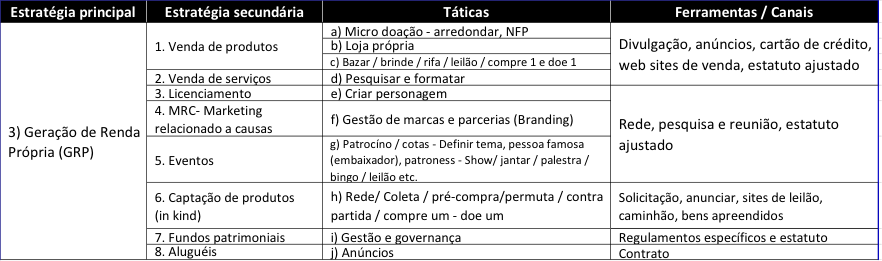

Estratégia 3: Geração de Renda Própria - GRP - parte 1/3
10 de Julho de 2017 às 07:00
Nesta estratégia principal veremos empresas, pessoas, fundações e organizações que aportam recursos financeiros, materiais e humanos pela causa da OSC e para ter um produto ou serviço em troca, sem a necessidade de mostrar ou escrever um projeto.

Projetos de geração de renda são empreendimentos capazes de gerar receita e resultados financeiros positivos para a organização, principalmente por meio da venda de produtos ou serviços relacionados às causas sociais. Uma característica importante dessa estratégia, além da inovação social, é o auxílio à sustentação financeira da organização por meio da geração de recursos desvinculados de projetos, os quais podem ser aplicados livremente, tanto no operacional como em investimentos.
Todas as estratégias secundárias desta estratégia: Venda de produtos e serviços, MRC, Eventos, Captação de produtos (in kind) e alugueis trazem recursos livres para a organização como um todo e não para um projeto específico. Além disso, também não demandam uma contrapartida atrelada ao recurso.
Analisando a tabela acima vemos 8 estratégias secundárias que iremos explicar uma a uma.
ESTRATÉGIAS 1 E 2: VENDA DE PRODUTOS E SERVIÇOS - Os produtos e serviços vendidos para compor a renda das OSCs são produzidos/implementados pela própria organização, por terceiros ou, ainda, pelos beneficiários como parte de programas terapêuticos, por exemplo. Os recursos obtidos pela venda nos três casos, porém, são da organização.
A venda de produtos e serviços é uma estratégia importante, pois os recursos obtidos são livres, não “carimbados”, ou seja, não atrelados a projetos específicos e podem ser utilizados com vistas à sustentação e à independência financeira. Muitas atividades deste tipo terminam por se transformar em negócios sociais.
Normalmente, são projetos inovadores, em que a organização deve usar a criatividade para produzir e vender em bazares esporádicos ou permanentes, loja própria, distribuidores e venda direta. Produtos e serviços sempre devem ter qualidade.
Os serviços e produtos podem ter uma ligação forte com a organização e sua missão. Por exemplo, na Derdic, da PUC-SP, os serviços vendidos são ligados à causa da surdez. Aulas de LIBRAS (língua brasileira de sinais) para mais de mil alunos ouvintes por ano, colocação de pessoas surdas no mercado de trabalho por meio do sistema Aprendiz. Outro exemplo é a Iniciativa Verde, que vende o serviço de “carbon free” e planta árvores para neutralizar a emissão de carbono de um evento ou atividades produtivas de uma empresa. Por outro lado, a fabricação de alambrado pela organização Ramacrisna foi a tática encontrada para trazer recursos para que a missão fosse alcançada, garantindo 33% das despesas. Neste caso, não há associação entre o produto vendido e a missão de educar e profissionalizar jovens visando o desenvolvimento humano.
Muitas pessoas preferem comprar em um determinado bazar porque sabem que estão comprando um produto cuja renda vai ajudar uma OSC, que na verdade está vendendo uma causa junto com o produto. O mesmo vale para os serviços e o fato dele ser fornecido por uma organização social faz com que eles ganhem um diferencial importante no momento da venda.
As fundações tendem a apoiar OSCs que têm produtos ou serviços em seu portfólio de receitas, porque elas doam recursos significativos por dois a três anos e, em seguida, vão em busca de outras OSCs. Desse modo, ao deixá-las após este período sabem que elas têm capacidade para sobreviver bem sem o seu recurso.
Um cuidado muito importante que deve ser observado nesta estratégia é que ela não pode extrapolar sua condição de atividade meio, afinal o objetivo da organização não é vender produtos e serviços.
Junto com os produtos e serviços está-se vendendo uma causa e este desafio pode ser explicado contando-se uma “historinha”. O “tag” é esta história que está amarrada, etiquetada, anexada ao produto. A OSC tem os ingredientes: criatividade, inovação e uma linda história que irá auxiliar a ter mais sucesso nas vendas.
Existem formas diversas de obter produtos para venda, desde a sua fabricação (artesanato, tijolos, alambrados etc) a produtos apreendidos pela Receita Federal ou pedidos de doação um produto específico a pessoas ou empresas (vinhos antigos) e até mesmo ter uma frota de caminhões que passam nas casas dos doadores e retiram as doações (UNIBES, ASA e Casas André Luiz). Tendo os produtos, basta organizar a venda, seja em lojas, bazares (permanentes ou não) ou, ainda, em evento específico para a venda.
O local e as estratégias de vendas deverão estar presentes em um plano de negócio, que irá pensar em todas as etapas de um planejamento de longo prazo similar às empresas. Definindo objetivos e metas e demais itens como, impacto social, diferencial etc. Organizações internacionais e brasileiras têm auxiliado OSCs locais a desenvolverem planos de negócios. Nesst, Ashoka e Artemisia são bons exemplos e websites que valem a pena ser pesquisados.
**A parte 2 deste artigo foi publicada no dia 07/08/2017, confira e a parte 3 em 11/09/2017, leia.
Michel Freller empreendedor social, palestrante, professor, consultor e facilitador. Mestre em Administração pela PUC-SP, atua junto as OSCs com ênfase em planejamento e mobilização de recursos com e sem incentivos. Fundador da Criando Consultoria ltda.
Publicado por
Notícias mais populares
Gestão
Em agosto de 2017, a revista ÉPOCA e o Instituto Doar divulgaram a primeira ediç&...
Contexto e tendências
Criado para tornar mais transparentes as parcerias entre a administração públic...
Profissional captador
A captação de recursos é fundamental para a sustentabilidade de uma organiza&cc...